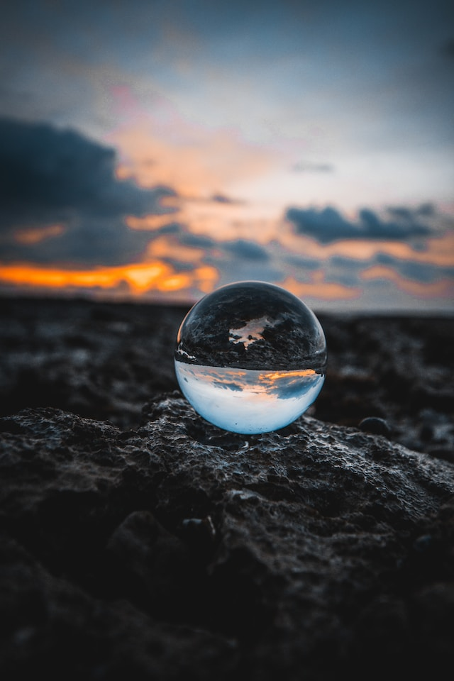
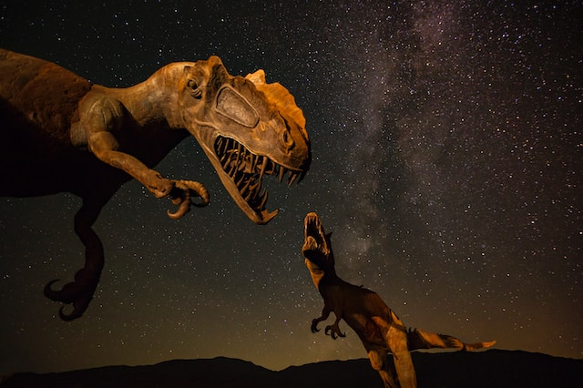

Come join us at the Community Science Museum where we’re committed to making science accessible to all.
Over the course of human history, science has developed from our early understanding of fire, wind, water, and earth to exploring everything from galaxies far away to the very building blocks of life itself.

The aim of our museum is to create a space where everyone can experience the wonders of our discoveries and perhaps even ignite a lifelong passion to continue the exploration of the world around us.
We believe science should not be confined to the textbook, but brought to live through exhibits. This is why we have over 1000 different exhibits on the many varied subjects of science to explore. Many of these exhibits are designed for you to interact with and play around to see science come to life (apart from the dinosaur exhibits – they only come to life at night when everyone’s gone home).
Exhibition spaces

Cosmology
Explore the wonders of our cosmos. Our fantastic exhibition, ‘The Sky Above Us’, explores the night sky and what we can see and know about the universe around us.

Evolution
For centuries, philosophers and scientists have wrestled with the question of our origins. Where do we come from and how did we get here?

Biology and medicine
From micro-organisms to the human body, major breakthroughs in biology are offering us unique insights into the great wonders of the tiny world.